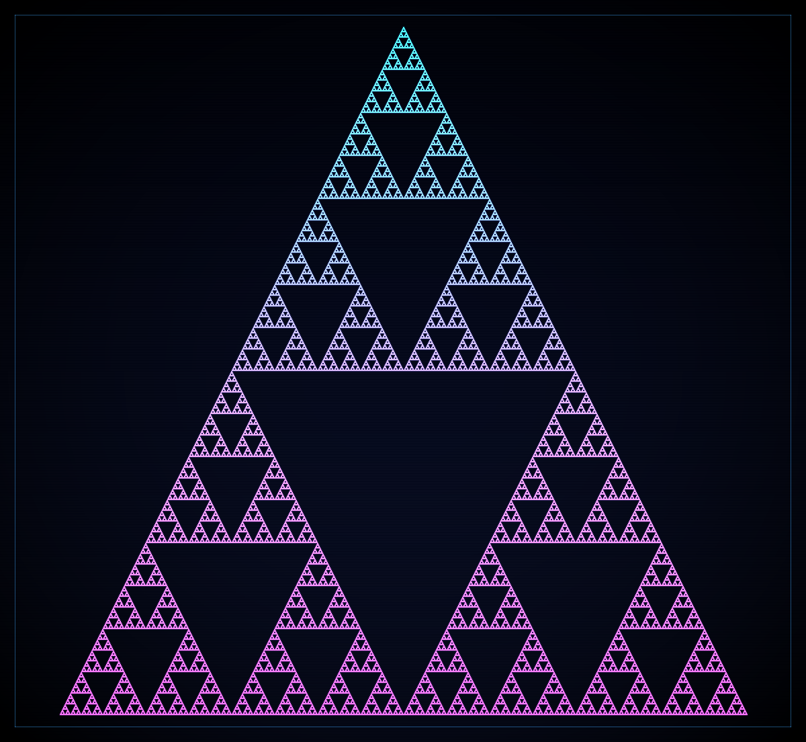

// 假设HYPOTHESIS
如果只把帕斯卡三角中的奇数项点亮、偶数项熄灭，一个看似朴素的组合数学表格，会不会自己长出经典的谢尔宾斯基三角分形？而且在 2 的幂高度处，奇数项总数是否会精确满足 3^m 这个漂亮得过分的公式？
If we light only the odd entries of Pascal's triangle and extinguish the even ones, will a humble combinatorics table spontaneously grow the classic Sierpiński triangle fractal? And at heights equal to powers of two, will the total number of odd coefficients match the almost-too-beautiful formula 3^m exactly?
// 方法METHOD
生成前 512 行帕斯卡三角，但不去计算庞大的组合数本身，而是直接用 Lucas 定理的奇偶捷径判断：C(n,k) 为奇数，当且仅当 k & (n-k) == 0。把每个奇数项渲染成带辉光的像素块，颜色从青色渐变到品红，输出 1200×1104 PNG。最后统计全部奇数项数量，并验证在 512=2^9 行规模下，奇数项总数是否等于 3^9。全程纯 Python、手写 PNG 编码器、零外部依赖。
Generate the first 512 rows of Pascal's triangle, but instead of computing huge binomial coefficients directly, use Lucas-theorem parity shortcut: C(n,k) is odd iff k & (n-k) == 0. Render each odd entry as a glowing pixel block, color-graded from cyan to magenta, and output a 1200×1104 PNG. Finally count all odd entries and verify that at the scale 512=2^9, the total number of odd coefficients is exactly 3^9. Pure Python, hand-rolled PNG encoder, zero external dependencies.
// 结果RESULT
成功 ✅ — 512 行的奇偶帕斯卡三角果然烧出了一张清晰的谢尔宾斯基三角：总项数 131,328 个，其中奇数项正好 19,683 个，占比 14.99%，并且与理论值 3^9 = 19,683 完全一致，1 个都不差。最戏剧性的地方在最后一行：第 511 行的 512 个系数居然全是奇数，因为 511 的二进制是 111111111，等于把所有位都打通了。一个来自高中组合数学的三角形，只看奇偶，立刻变成分形火焰。说明有些图案不是画出来的，是被数论点燃的。
SUCCESS ✅ — The parity-only Pascal triangle for 512 rows really does ignite into a crisp Sierpiński triangle: out of 131,328 total entries, exactly 19,683 are odd, a 14.99% ratio, matching the theoretical value 3^9 = 19,683 with perfect precision. The most dramatic twist is the final row: all 512 coefficients in row 511 are odd, because 511 in binary is 111111111, effectively opening every bit path. A triangle from high-school combinatorics, viewed only through parity, instantly transforms into fractal fire. Some patterns are not drawn — they are lit by number theory.
// 产出ARTIFACT

🔍 点击放大Click to enlarge
← 返回实验列表BACK TO EXPERIMENTS